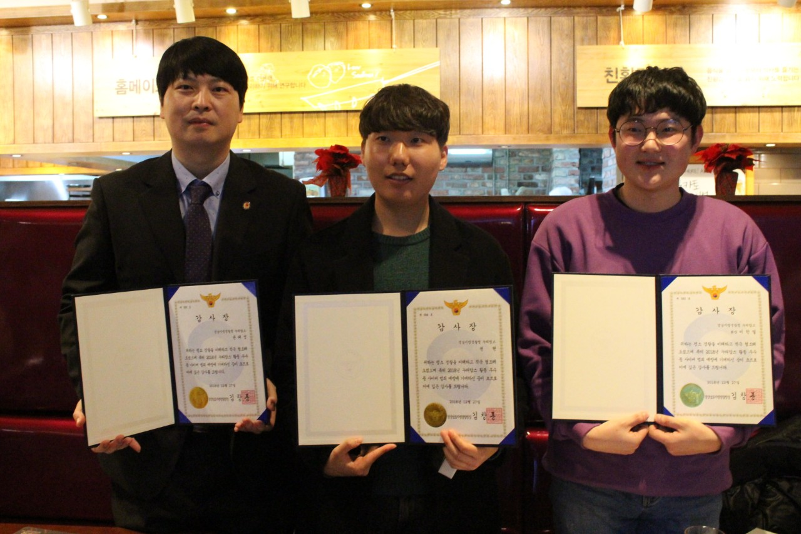
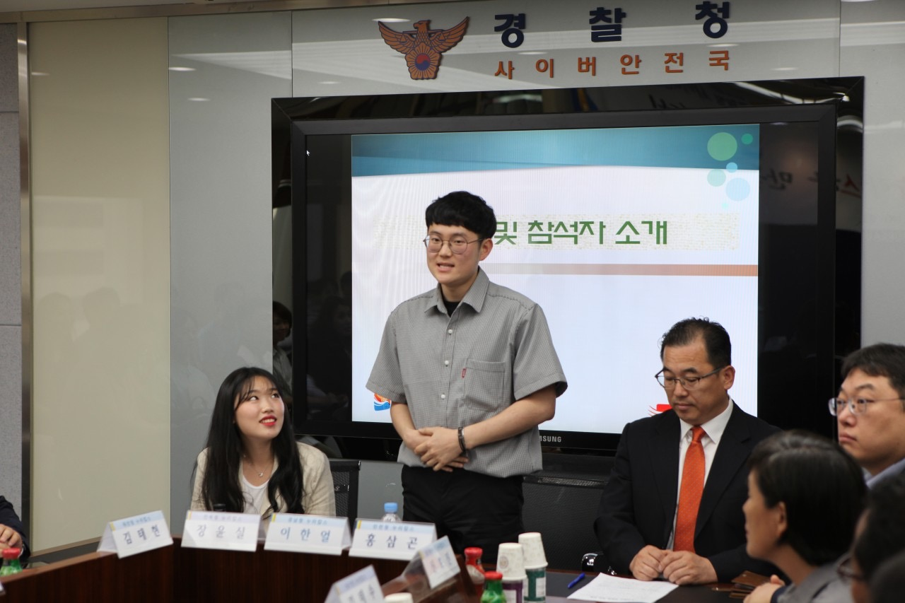
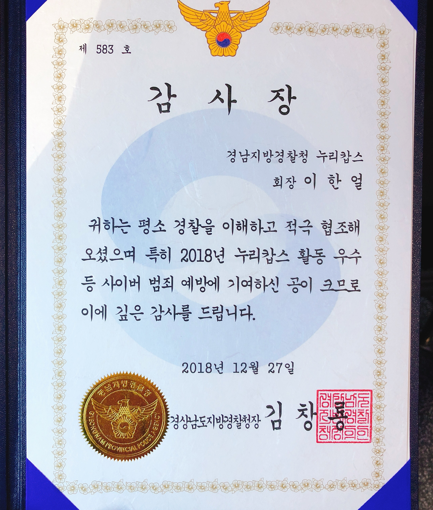
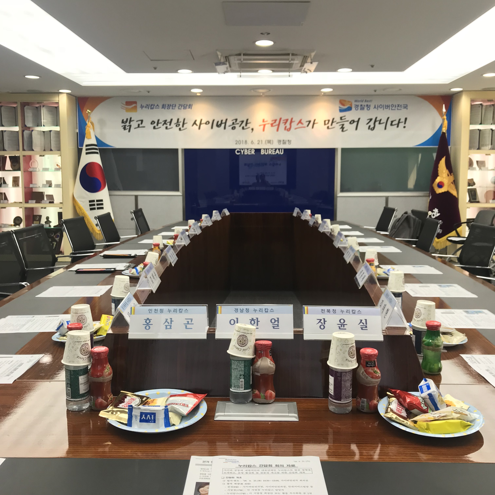
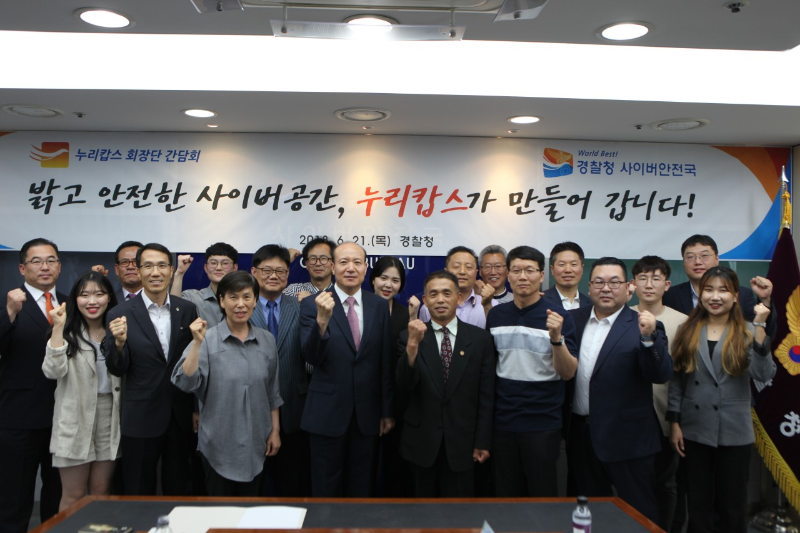
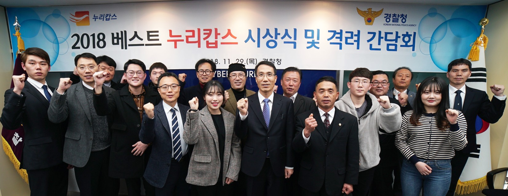

누리캅스 (Nuricops) is a volunteer cyber honorary police organization commissioned by the Korean National Police Agency. Founded in 2007, it brings together citizens — primarily IT students, professors, and security professionals — to monitor illegal and harmful content online, report cybercrime, and contribute to building a safer internet environment.
I served as President of the Gyeongnam Provincial Police Agency chapter, leading volunteer activities including online illegal content monitoring, cybercrime prevention campaigns, and coordination with law enforcement. Through active and consistent contributions, I was recognized as an Outstanding Member (우수활동자), and received an official Letter of Appreciation (감사장) from the Gyeongnam Provincial Police Agency.

Commendation ceremony
Greeting
Letter of Appreciation
Meeting
Group photo
2018 베스트 누리캅스 시상식 및 격려 간담회 — Korean National Police Agency